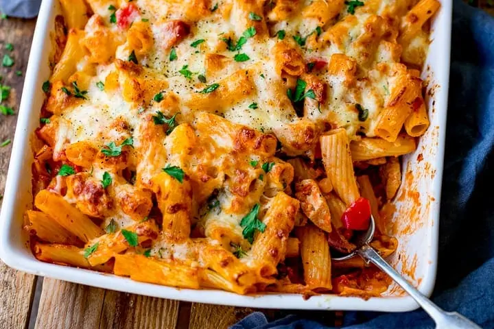

Cheesy Chicken Pasta Bake

Description
This Cheesy Pasta Bake With Chicken is
a family favourite (and it makes great
leftovers too!). Not a lot can beat a
lovely cheesy pasta bake served up with a
big side of salad (obviously that makes
it healthy...)
Ingredients
- 400g dried pasta shapes
- 1 tbsp vegetable oil
- 3 large chicken breasts
- 1 large onion
- 1 red bell pepper
- 1 yellow bell pepper
- pinch of salt and pepper
- 2 cloves garlic - peeled and minced
- 1 tbsp tomato puree
- ½ tsp dried oregano
- ½ tsp dried thyme
- 800g tinned chopped tomatoes
- 120ml double (heavy) cream
- 100g fresh baby spinach
- 100g strong cheddar cheese - grated
- 100g mozzarella - grated
- Small bunch parsley - roughly torn
Steps
- Preheat the oven to 190 degrees C/375 degrees F. Boil a large pan
of water and cook the pasta for 1 minute less
than recommended on the pack. Drain.
- Whilst the pasta is cooking, heat the oil on a
medium heat, in a large frying pan. Add the
chicken, and cook until just sealed - about 5
minutes.
- Add the onion and cook for a further 3-4 minutes
until the onion is softened.
- Add the chopped peppers, salt, pepper, garlic,
tomato puree, oregano and thyme. Stir and cook for
2-3 minutes.
- Stir in the tinned tomatoes and cream, bring to a
gentle bubble, then add the pasta, spinach and cooked
bacon. Stir everything together, then transfer to a
large baking dish.
- Top with the cheddar and mozzarella, and place in the
oven for 20-25 minutes, until the cheese is golden brown.
- Take out of the oven and top with parsley before serving.
Home